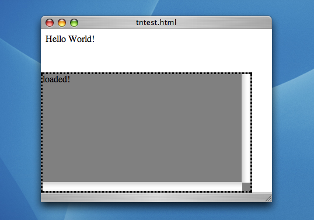
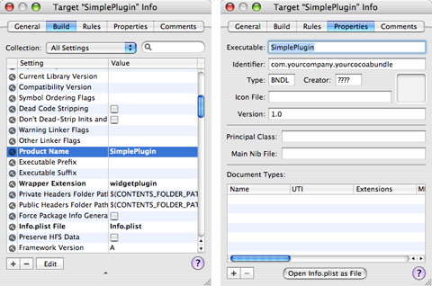
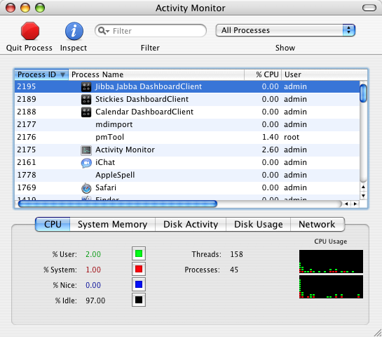
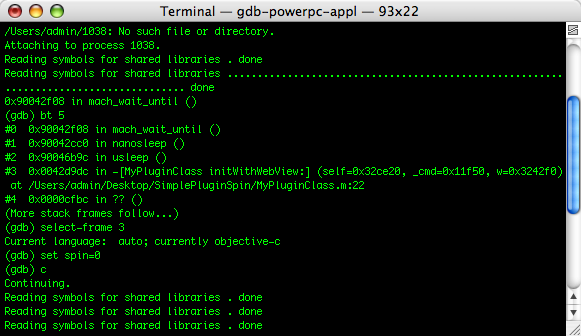

|
IntroductionDashboard widgets are not difficult to create, but they can be challenging to work with once something goes wrong. Developers used to working with languages like Objective-C or Java may be used to more control and feedback during the development process than what is provided from the web-based technologies used to create a widget. This Technical Note discusses effective methods to obtain such control and feedback, hopefully making better use of your development time. This Technical Note is meant to be a supplement to the Dashboard Programming Guide. Developers interested in learning how to create a Dashboard widget should first read that document; the basics of widget development are not covered here. Developing in SafariOne of the most important things to keep in mind when developing a widget is the fact that it is, in many ways, just a web page. Dashboard widgets use the same Web Kit rendering engine as Safari, so you can do almost all of your development inside Safari and not be concerned with bundling, property lists, default images and icons, all of which add their own complexity (these are discussed later). If you've already bundled your widget, simply Control-click on the Testing your content in Safari is particularly essential in the area of JavaScript errors. Dashboard will report JavaScript errors to the Console application, but it is difficult to block execution from inside a widget in order to narrow down the source of an error. Working in Safari will also help you isolate calls to the The first important step for debugging in Safari is enabling the Debug menu. This is accomplished by typing the Terminal command shown in Listing 1: Listing 1: Enabling the Debug Menu in Safari. l337_d3v$ defaults write com.apple.Safari IncludeDebugMenu 1 The next time you launch Safari, you should see the Debug menu to the right of the Help menu. Be sure to select the Log JavaScript Exceptions item, to get as much feedback as possible. A new feature in Mac OS X v10.4 is the JavaScript Console, which can also be enabled from the Debug menu. Once the JavaScript console is active, you're ready to work. Printing Debug InformationThe most basic and universal debugging aid in JavaScript programming is the While the When running in Dashboard, Declaring a debug element is as simple as inserting a Listing 2: Inserting a debug div into existing content <html>
<head>
<style type="text/css">
#debugDiv {
border-style: dotted;
border-color: black;
background: gray;
position: absolute;
bottom: 0px;
left: 0px;
height: 200px;
width: 90%;
overflow: scroll;
display:none;
}
</style>
<script language="JavaScript" type="text/javascript">
var debugMode = false;
// Write to the debug div when in Safari.
// Send a simple alert to Console when in Dashboard.
function DEBUG(str) {
if (debugMode) {
if (window.widget) {
alert(str);
} else {
var debugDiv = document.getElementById('debugDiv');
debugDiv.appendChild(document.createTextNode(str));
debugDiv.appendChild(document.createElement("br"));
debugDiv.scrollTop = debugDiv.scrollHeight;
}
}
}
// Toggle the debugMode flag, but only show the debugDiv in Safari
function toggleDebug() {
debugMode = !debugMode;
if (debugMode == true && !window.widget) {
document.getElementById('debugDiv').style.display = 'block';
} else {
document.getElementById('debugDiv').style.display = 'none';
}
}
</script>
</head>
<body onload='toggleDebug();DEBUG("loaded!");'>
<!-- All our existing content... -->
Hello World!
<!-- Declare the debug div anywhere. CSS handles the positioning -->
<div id='debugDiv'></div>
</body>
</html>
Figure 1 demonstrates what the above page looks like in Safari. Note the "loaded!" string that is passed to Figure 1: A simple web page with a debug/log div.  An alternate technique is to create a new window using This document does not discuss the basics of JavaScript debugging. A great article about the basics of JavaScript debugging can be found at The JavaScript Source. The article is dated and does not cover some of the newer features of JavaScript and DHTML, but much of the information and common caveats are still applicable. In particular, the Activating Development ModeWhen the time comes to test your widget in bundled form, it can be quite cumbersome to repeatedly show and hide the Dashboard to switch between your widget and other Desktop apps, such as Console, or the editor you're using to make changes. To minimize the number of times you show and hide Dashboard, you can place Dashboard in Development Mode. This allows you to keep a widget on screen at all times \x97 even when Dashboard is not shown. To enable Development Mode:
Viewing output, making changes, and reloading will be a much smoother process with your widget permanently visible. Note: To reload a widget, make sure it is focused and press Command-R on your keyboard. You should see a "swirl" animation, indicating that the widget's content has been reloaded. Widgets That Don't LaunchSo you've dropped all your content into a Dashboard Never AppearsDouble-clicking a functional widget from the Finder should result in the Dashboard being shown and the widget being loaded. If you double-click your widget and the Dashboard never shows itself, your bundle is probably missing one of the following items:
Default Image, No ContentIf your widget successfully displays in Dashboard, you should see its default image on the screen while the main content loads. If the default image vanishes and nothing replaces it, it most likely means your Note: If this happens to you, it may be difficult to close the widget. The easiest thing to do in this case is to show the Widget Bar; this reveals the closeboxes for every widget on screen. Content that shows itself but is not responsive likely threw a error in JavaScript code stemming from the Kicked out of the (Widget) BarIn order for your widget to appear in the Widget Bar, it must be placed in either Widgets added to one of the two installation directories should appear the next time you show Dashboard. If yours does not, cycle through all the lists in the Widget Bar in case it is just off-screen. The Widget Bar is organized alphabetically based on each widget's localized Note: Like the rest of Mac OS X, the Widget Bar gives precedence to filenames that do not match the localized Failure of Specific FeaturesWeb Content: Networking, Embeds, File I/O, and JavaAs described in the Security section of the Dashboard Programming Guide, certain web content features require special
If content falling under any of these categories is in your widget without the appropriate Widget PreferencesA common mistake when writing out widget preferences is a reversal of the required parameters. The It is also important to persist both preference values and keys as Strings. Primitive values or objects may not be persisted into preferences successfully; attempting to do so will typically yield an error in Console resembling Listing 3. Listing 3: Typical widget preferences write error. DashboardClient[869] CFLog (15): Could not generate XML data for property list It is worth mentioning that widget preferences are also a mechanism for saving widget state. Remember that at any time, the user may log out or restart the computer, at which point your widget's process will be terminated. If you wish to have any transient state restored when the user logs back in and shows Dashboard again, that state needs to be written out as widget preferences as soon as it changes, and fetched when the widget instance is reloaded. Note: Killing a Widget Plug-insThe concept behind a widget plug-in is simple: providing JavaScript access to native code and APIs. This section covers common problems when developing a plug-in, how to recognize them, and how to solve and prevent them. The basics to developing a widget plug-in are covered in the Dashboard Programming Guide, and are not discussed here. Where's my Plug-in?The most common problem with widget plug-ins is that they just don't show up. This problem is usually accompanied by an error in the Console like the one in Listing 3. Listing 4: Typical error due to a missing widget plug-in. DashboardClient[123] (com.mycompany.MyWidget) undefined: Can't find variable:MyWidgetPlugin (line: 0) This is actually a generic "undefined variable" error from JavaScript; what's unique about it is that the variable in question is the name of your widget plug-in. This error is seen every time your JavaScript code attempts to reference the plug-in and is an indication that the widget does not recognize this variable as your plug-in. This usually happens for one of the following reasons:
Figure 2: Product Name and Executable properties in Xcode target settings.  The easiest way to ensure your plug-in is actually loaded (as opposed to your Listing 5: Reporting the loading of a widget plug-in.
- (id) initWithWebView:(WebView*)webview {
NSLog(@"I'm in!");
// initialize...
return self;
}
Note: Remember to comment out or remove Calling a Plug-inA widget plug-in's methods are exposed to JavaScript as soon as you bind it to the It is also important to make sure you have not defined methods you are trying to call or members you are trying to reference inside the Calls to a plug-in method blocked by either of these mechanisms results in a Console error resembling that shown in Listing 5. Listing 6: Typical method-not-found error from JavaScript.. Value undefined (result of expression MyPlugin.MyMethod) is not object. (line: 10) Crashing Plug-insDepending on the complexity of your plug-in, it may end up crashing or hanging during the course of development and use. If the crash is indeed in your code, this should become evident when viewing a crash log from the This document only discusses how to best use gdb with a widget plug-in. To learn about general use of gdb, see Getting Started With gdb or Debugging With gdb. Attaching gdb to a Plug-inIn order to attach to your widget, you need the process ID of the Figure 3: Dashboard widgets inside Activity Monitor.  Also note that an Catching a Crash on StartupIf your plug-in crashes as soon as it is loaded, the Listing 7: Using a loop to stop a widget plug-in.
-(id)initWithWebView: (WebView*) w {
NSLog(@"initWithWebView");
// spin before doing anything serious
// this will buy us time to attach with gdb
int spin = 1;
while (spin == 1) {
usleep(1000);
}
self = [super init];
return self;
}
This should hang your widget up and allow you to attach with gdb before a crash occurs. You get the pid from the Once you've obtained the pid, you can attach to the process and change your loop condition, allowing execution to continue as expected. Figure 4 shows a simple example of this. Figure 4: Breaking a spin loop from gdb.  Document Revision History
Posted: 2005-09-07 | ||||||||||||
|